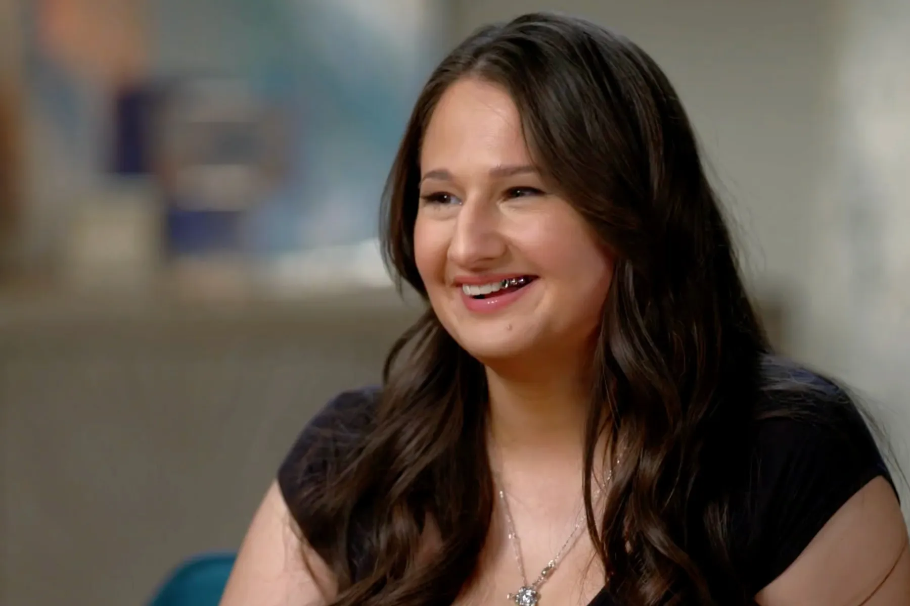
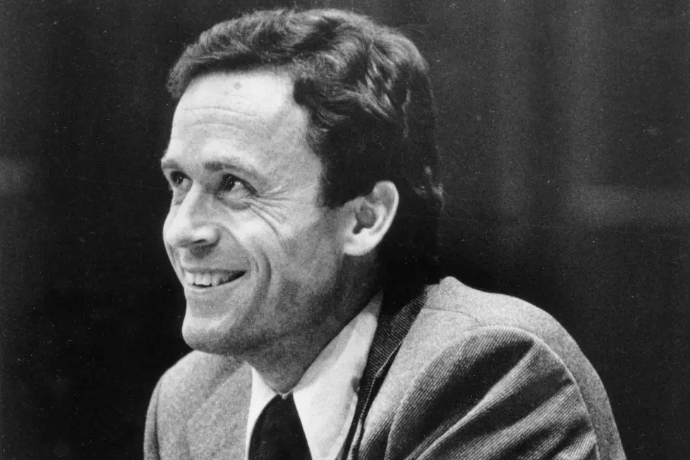
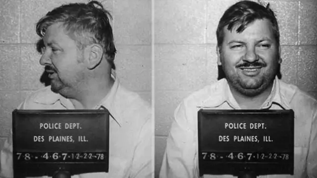
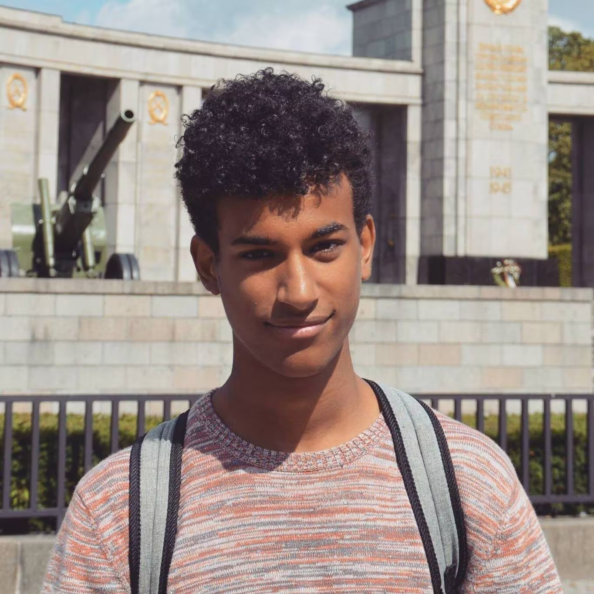

Gypsy Rose Blanchard
Het verhaal van Gypsy Rose
Bij deze spannende aflevering vertellen wij het verhaal van het onschuldige meisje Gypsy Rose Blancard. Een meisje dat haar hele jeugd onnodig in verschillende ziekenhuis bedden heeft doorgebracht en allerlei dokters heeft gezien. Na al die jaren besluit Gypsy samen met haar (ex) vriend haar moeder om het leven te brengen.
Ted Bundy
Meester van misleiding
In deze aflevering vertellen wij het verhaal van Ted Bundy. Een man die sinds dat hij pas 3 jaar is al een psychose heeft en gekke interesses heeft die zorgen opwekt bij familie... Het stopt hier niet maar wordt alleen maar erger en erger en begint Ted Bundy op een jonge leeftijd al met moorden.
Kara Robinson
Slimheid versus seriemoordenaar
In deze aflevering vertellen wij over het verhaal van slachtoffer Kara Robinson. Als meisje van 15 jaar is zij ontvoerd door seriemoordenaar Richard Evonitz. 18 uur lang is ze gemarteld voordat ze kon ontsnappen. Over hoe en wat ze daarvoor allemaal heeft gedaan wordt allemaal verteld in de aflevering. Hoe is het haar gelukt als een 15 jarig meisje om te ontsnappen uit de handen van een seriemoordenaar?

John Wayne Gacy
De clown en de moordenaar John Wayne Gacy
In deze aflevering gaan we het hebben over het verhaal van John Wayne Gacy. Dit verhaal van de seriemoordenaar is weer anders dan die van Ted Bundy of de andere verhalen. Hoe deze man zijn slachtoffers uitzoekt en zich in het dagelijks leven een hele normale man lijkt te zijn is iets om over te praten in onze podcast.
Sanda Dia
De donkere kant van ontgroeningen: Sanda Dia's laatste dagen
In deze aflevering gaan wij vertellen over het tragische verhaal van de student Sanda Dia die bij een studievereniging wilde, maar dit gigantisch fout ging. Dit verhaal is anders dan de andere true crime verhalen omdat het geen directe moord is maar een terecht onopzettelijke doding.
Monique
Monique en haar 10 jarige hel
In deze aflevering gaan we het hebben over Monique die 10 jaar lang in de handen zat van een mensenhandelaar, haar ex. Ze werd mishandeld, bedreigd en gedwongen om in de prostitutie te werken. Na haar ontsnapping kwam ze zwaar in een juridisch en financiële ellende terecht.